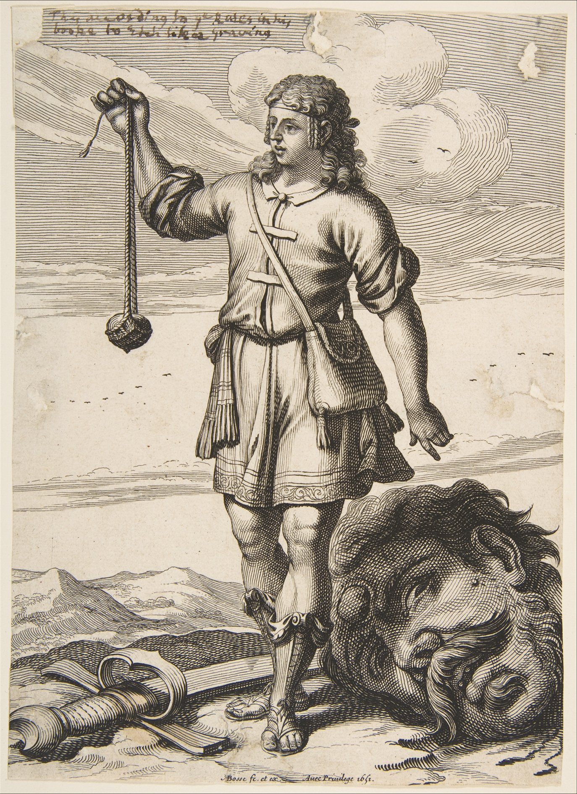

The famous Philistine warrior who challenged the Israelite army. He was defeated by the future king of Israel, David, a young boy at the time, with a rock hurled by the slingshot. Giving us the phrase, David vs. Goliath to describe a fight where the opponents have a massive difference in size or strength.
Origins
- Jewish/Christian Tradition
Mention in:
- The Bible, Books of Samuel
Depending on the manuscript, Goliath has two different versions of his height. Most versions of the Bible list his height as “six cubits and a span” (1 Samuel 17:4). A cubit is 18 inches and a span is 9 inches (footnote here). Which means that Goliath is 9 feet and 9 inches/2.97 meters tall. That is just short of reaching a basketball hoop. However, older manuscripts of the same text record his height as four cubits instead of six. This would make him 6 feet and 9 inches/2.06 meters tall, (footnote here), which is definitely tall by normal standards, but not really a giant, especially considering the heights of some NBA players.